Every feature, one page
Everything it does. $4.99, once.
Movies, TV, music, photos, audiobooks and game ROMs. Real titles from real databases, a full preview before anything moves, and an undo for every batch you have ever run. Here is the whole thing, no fine print.
Andor.S01E10.One.Way.Out.1080p.mkv→Andor S01E10 One Way Out.mkvInception.2010.2160p.UHD.mkv→Inception (2010).mkvbohemian_rhapsody.mp3→Queen - Bohemian Rhapsody.mp3One purchase covers Mac, iPad and iPhone. No subscription, no ads, no account.
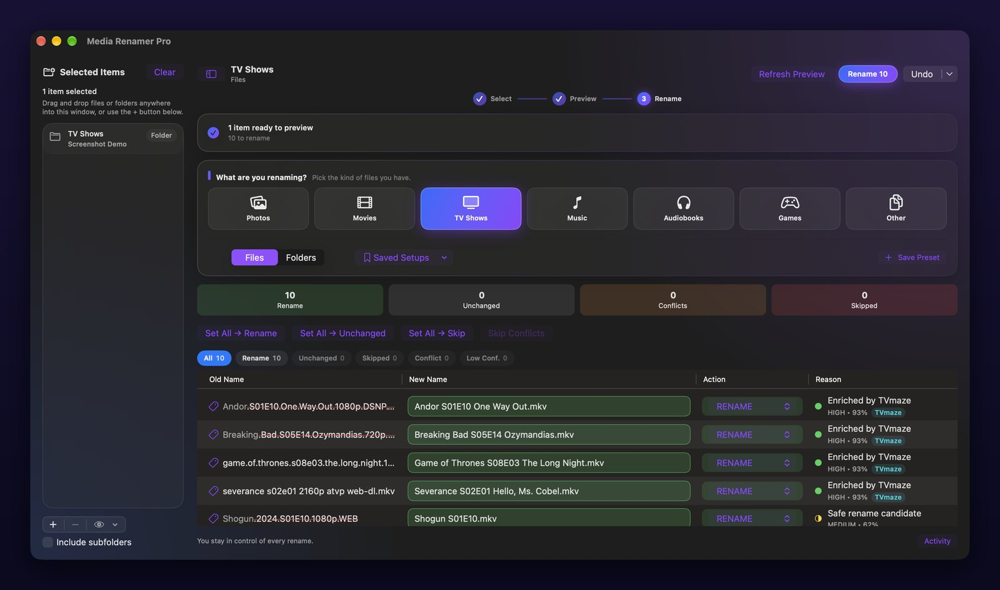
Safety first
Built so a batch rename can't eat your files
Most renamers find out about a problem after your files are already wrong. This one is built the other way around: show everything, change nothing until you say so, and keep a way back for every batch.
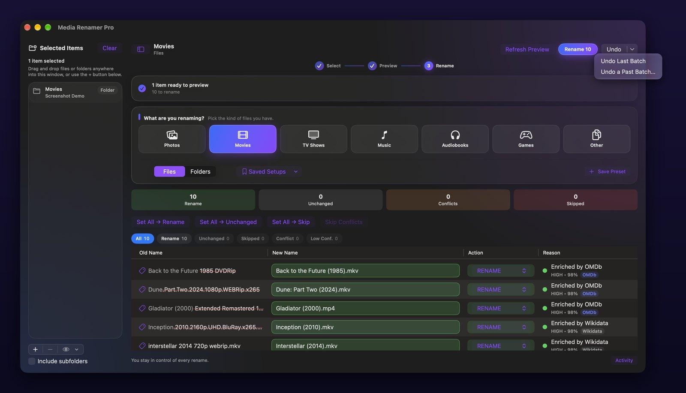
New in 2.1.3
Undo any past batch
Click the arrow next to Undo (touch and hold on iPhone and iPad) and pick any batch you have run, not just the last one. Files that moved since are skipped, never overwritten.
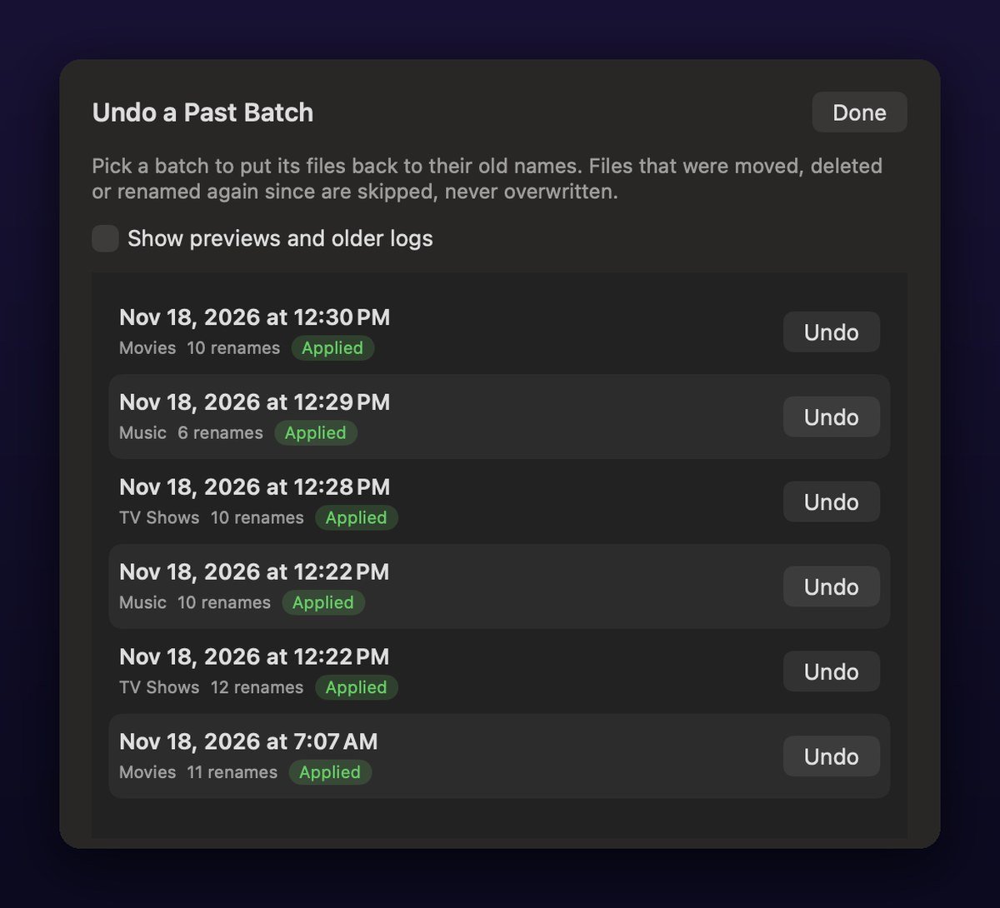
Every batch, one list
Your whole history, one click away
Movies from Tuesday, music from last week. Each batch shows its date, type and count. Previews and older logs are one switch away.
- Preview every changeOld name and new name side by side, with where the match came from and how sure it is.
- Nothing moves until you say soRename asks first. Every new name can be edited, skipped or set back to unchanged.
- Undo the last batchOne click puts it all back.
- Undo a Past BatchAny earlier batch, as long as its log is in your export folder. The app keeps the newest 100.
- Interrupted renames fix themselvesApp quit, Mac asleep, NAS dropped mid-batch? The files go back on their own next launch.
- Never overwritesTwo files that land on the same name get a _1 suffix instead of one eating the other.
- Swaps and chains handledA two-phase rename means A to B while B goes to C never loses a file.
- Capital-letter fixes that stickCase-only renames work even on drives that ignore capitals.
- Safe on NAS and SMB sharesBuilt and tested against network drives, where most renamers break.
- A log for every runCSV plan, text summary and a rollback file, saved where you choose.
- Tag writes are carefulTags are backed up, flushed and checked. If a write looks risky, it refuses and tells you why.
- Collision check before you clickTwo files heading for one name show as a conflict in the preview, not a surprise after.
Six kinds of media
One renamer for everything on your drives
Each type has its own naming template, its own data sources and its own rules, because a song is not a movie.
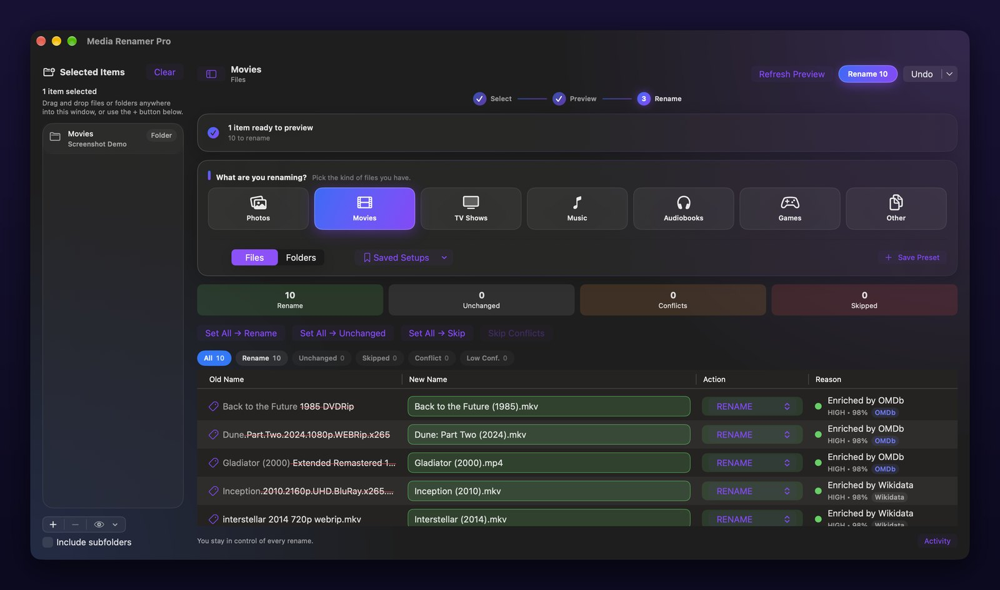
Movies
The right title and year, the junk gone
Top.Gun.Maverick.2022.IMAX.2160p.WEB-DL.DDP5.1.Atmos.mkv becomes Top Gun: Maverick (2022).mkv. Scene tags, resolutions and codecs come out. Titles come from OMDb, TMDb and Wikidata.
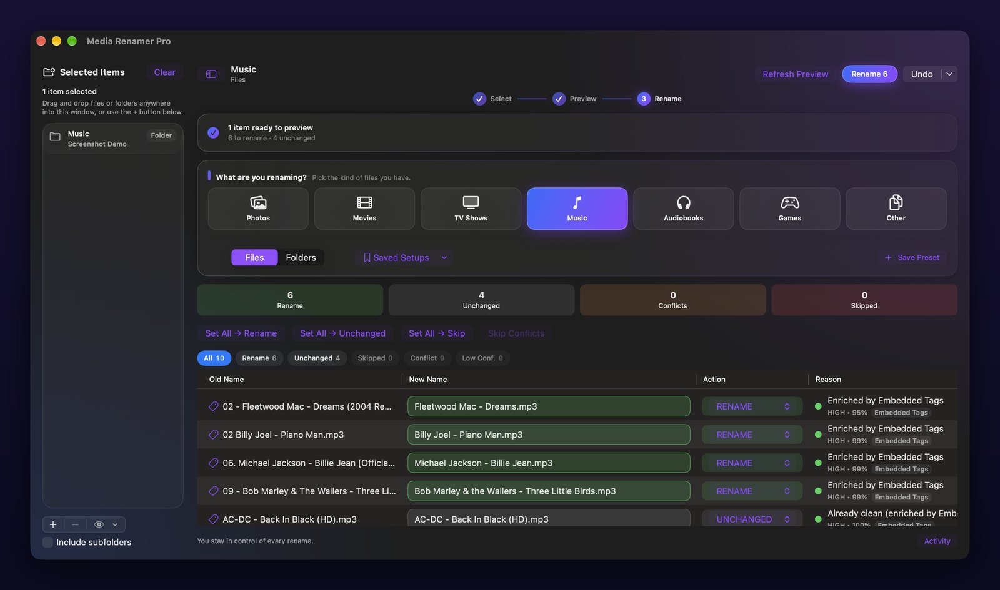
Music
Read from the tags already in the file
Track 06.mp3 becomes Michael Jackson - Billie Jean.mp3. Artist, title, album and track come from the file itself, and Apple Music fills in album, year and cover art.
TV shows
- Real episode titles from TVmaze, TMDb and OMDb
- SxxExx naming Plex, Jellyfin and Emby expect
- Episode numbers from the Season folder when the file has none
- Split episodes (S01E05a, b) matched by title
- Two episodes in one file become S02E19-E20
- Show names in their official styling
Movies
- Title and year, scene tags stripped
- Keeps the year when a title is ambiguous
- Folders mode renames whole movie folders
- Never renames your library folders like Movies or TV Shows
Music
- Embedded tags, Apple Music and MusicBrainz
- Duets, featured artists, compilations and band names handled
- Remaster, live and edit labels parsed out of titles
- Tribute and karaoke acts skipped in lookups
- Tags fill in even on MP3s that had none
Audiobooks
- Author and title from Google Books and OpenLibrary
- One lookup per book, so every chapter matches
- Chapters mode for multipart books
- Numbers in titles stay put, like 2001: A Space Odyssey
Retro game ROMs
- Clean titles and region tags from IGDB and RAWG
- A platform-aware era check stops a SNES cart matching a 2008 game
- Reads the game inside zip and 7z archives
Everything else
- Other mode for documents and anything without media metadata
- Name cleanup: bracketed tags, junk words, Roman numerals, title case
- Your own remove patterns, plain text or regex
Photos and video
IMG_4921.HEIC was never a name
Date taken, camera, city and a description of what is actually in the picture, so a photo is findable in Spotlight, Finder, Photos and Plex years from now.
- Apple Intelligence descriptions, freeOn Apple's Private Cloud Compute: no account, no key, no cost. Apple does not keep or see your photos. Needs macOS or iOS 27.
- On-device options tooOn-device Apple Intelligence or Apple Vision when you want nothing to leave at all.
- Bring your own modelAnthropic, Google, OpenAI or xAI with your own key, or a local Ollama model on your own network.
- Short, human namesSix words max.
2024-08-12 Tokyo Vacation.heic, not a paragraph. - Knows your peopleTeach the Face Library your family once and their names can go right into the file name.
- Guided face scanFive head angles in about 15 seconds, sharp frames only.
- Share your people with familySend the people you pick by AirDrop, Messages or email, after you confirm they agreed. Family add them with Import People. Nothing goes through a server.
- Saves the description into the photoAs a caption and keywords, so search finds it. The picture itself is not changed.
- Old scans read properlyScanned prints are read at full detail, so handwritten captions come through.
- Date, camera and cityFrom the photo's own data, with the city from Apple's location lookup.
- Videos tooPhone and drone clips get the same date-first naming.
Tags and cover art
Fix what is inside the file, not just its name
Media servers read tags. When the tags are wrong, the best filename in the world still shows up wrong. So the tags are editable too, with the same preview and undo.
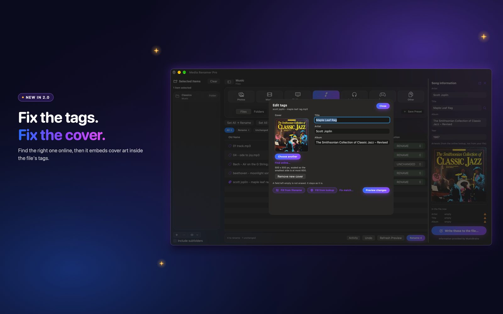
Edit tags
Title, artist, album, show, year, cover
Change any field, preview exactly what will be written, then save. Undo puts the file back exactly. MP3, MP4, M4A, M4B, M4V, MKV and WebM.
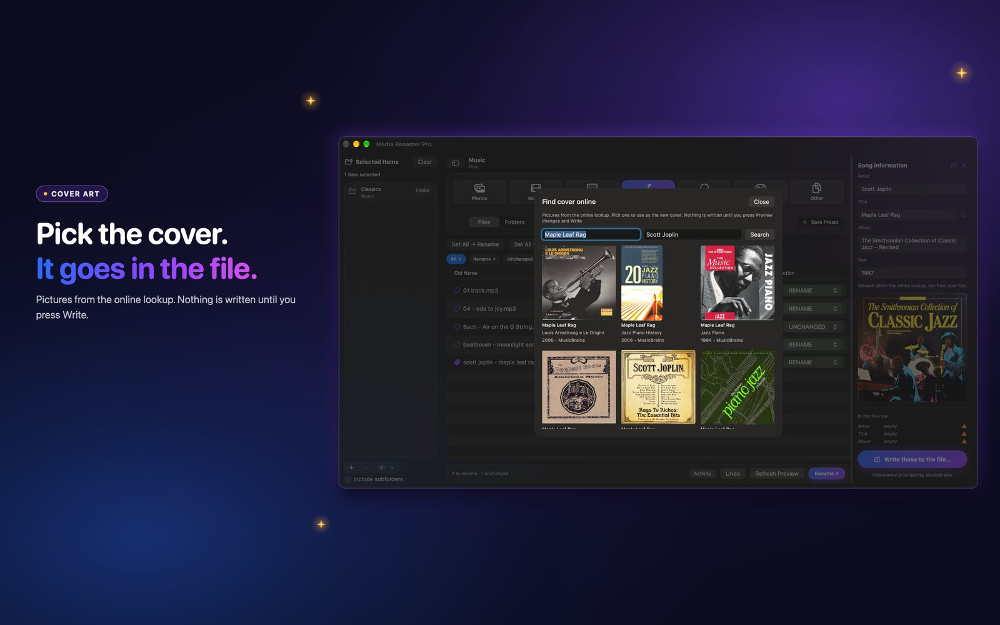
Cover art
See the pictures, pick one
Find cover online shows the options and embeds the one you choose inside the file's tags. It never renames, moves or deletes poster files.
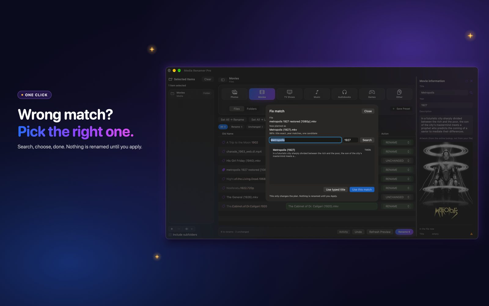
Fix match
Wrong movie? Pick the right one
Search by title and year (artist for music, author for books), pick the right result, and it remembers your choice next time.
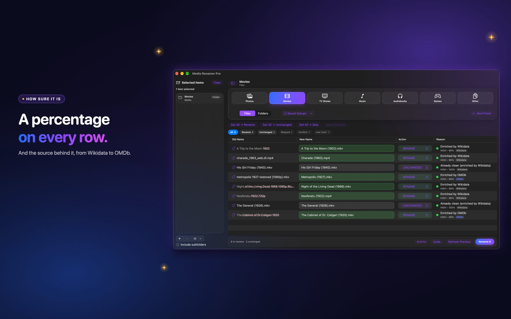
Confidence
A number you can actually trust
Every row says how sure it is and why: how well the title matched, whether the year agrees, how many candidates there were.
- Clean tagsWipe junk tags in one pass. Cover art stays unless you say otherwise.
- Fill from filename or lookupBlank fields only, and lookups fill confident matches only.
- Tags and name disagree?A review popup asks which to trust, and can rewrite the tags to match the name you keep.
- Stop any timeClean, Fill and Lookup have a Stop button that finishes the file in hand.
Workflow
Set it up once, then just press Preview
The boring part of a library is the hundredth time you do the same thing. These are for that.
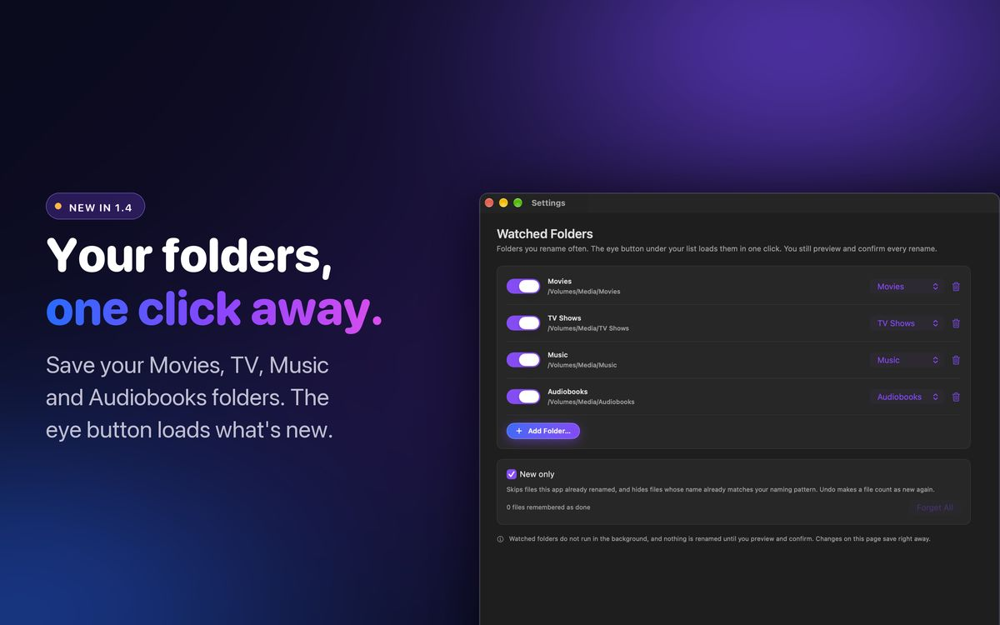
Watched Folders
Only what is new
Save the folders you rename most. The eye button loads them, and New only skips everything you already renamed.
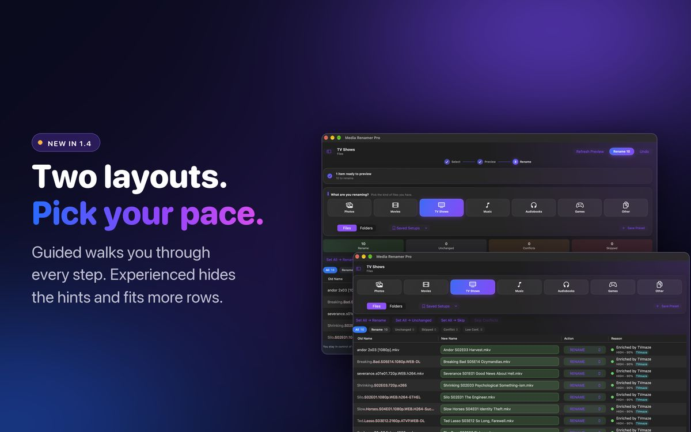
Two layouts
Guided or Experienced
Guided shows every step while you learn. Experienced hides the hints and moves Preview, Rename and Undo to a bar at the bottom so more rows fit.
- Rename from FinderSelect files, right click, Rename with Media Renamer Pro. It opens with them loaded.
- Siri and ShortcutsPreview Rename and Use Saved Rename Preset actions. They always stop at the preview.
- Add and remove on the flyThe + and − buttons, or drag more in. The same file is never added twice.
- Presets and Saved SetupsA naming setup per media type, ready in one click.
- Click-to-add tokensBuild a template from tokens like title, year, season, artist and people. No regex.
- Subtitles follow the videoLanguage and forced tags kept, so Plex and Jellyfin still pair them.
- Include subfoldersOne switch to rename a whole tree.
- ExclusionsSkip file types or names you never want touched.
- 11 app colorsPurple is the original. Pick yours in Settings.
- Run logs for supportEach log lists the app version and key settings, so a fix comes faster.
Privacy
Your files are your business
No account, no tracking, no ads, no telemetry. Here is exactly what can leave your device, and how to stop even that.
- Renaming happens on your deviceFiles are read and renamed locally. Online lookups send names, never your files.
- Local-Only ModeOne switch blocks every internet connection, even lookups you start by hand. A local Ollama server still works.
- Keys in the KeychainAPI keys live only in your Keychain and are kept out of run logs.
- Private Cloud ComputeApple built it so your photos are never stored or shared.
- Delete All Face DataOne button removes every enrolled face. Presets never keep a copy.
- No account at allBuy it, open it, use it.
Full details in the app privacy policy.
Devices and price
Mac, iPad and iPhone. One price, forever.
A universal app. Buy it once and it runs on all three. On iPhone and iPad, pick any folder in Files or iCloud Drive, including folders on a network share, and rename right there.
- US $4.99, onceNo subscription, no ads, no account.
- macOS 14 or laterOn your Mac.
- iOS and iPadOS 17 or lateriPhone and iPad, same features.
- Files and iCloud DriveRename in place on iPhone and iPad, network shares included.
- Apple Intelligence photo namesmacOS or iOS 27 on a supported device. Everything else works without it.
- Feature requests get builtSeveral features started as one user's email. Send yours.
Comparing? See how it stacks up against FileBot, tinyMediaManager and A Better Finder Rename, or read the release notes and the FAQ.

Rename it all, see it first
Media Renamer Pro for Mac, iPad and iPhone. $4.99 once. No subscription, no account.